Blog & Reflections
Insights, notes, and records of academic work exploring the intersections of clinical psychiatric nursing, software engineering, and implementation science.
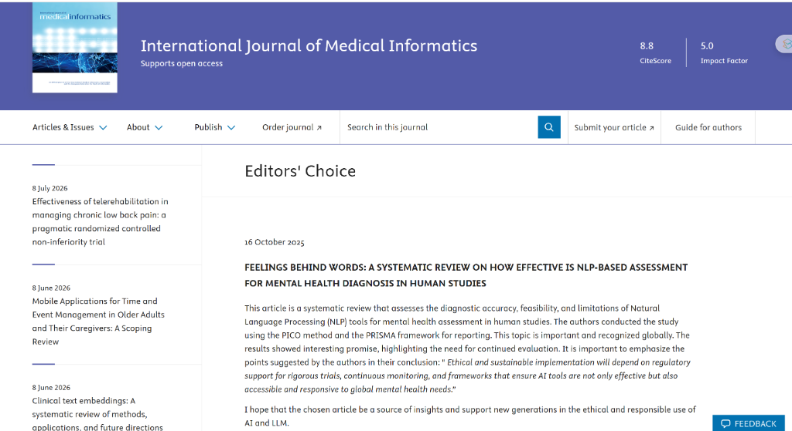
Featured by FIK UI: Q1 Publication & Editor's Choice Award in IJMI
Grateful to share that the Faculty of Nursing (FIK UI) has featured our academic achievement. As lead author, I collaborated with our research cluster to publish a systematic review on using Natural Language Processing (NLP) to assist mental health diagnostics, which was honored with the Editor's Choice award in the International Journal of Medical Informatics (IJMI).
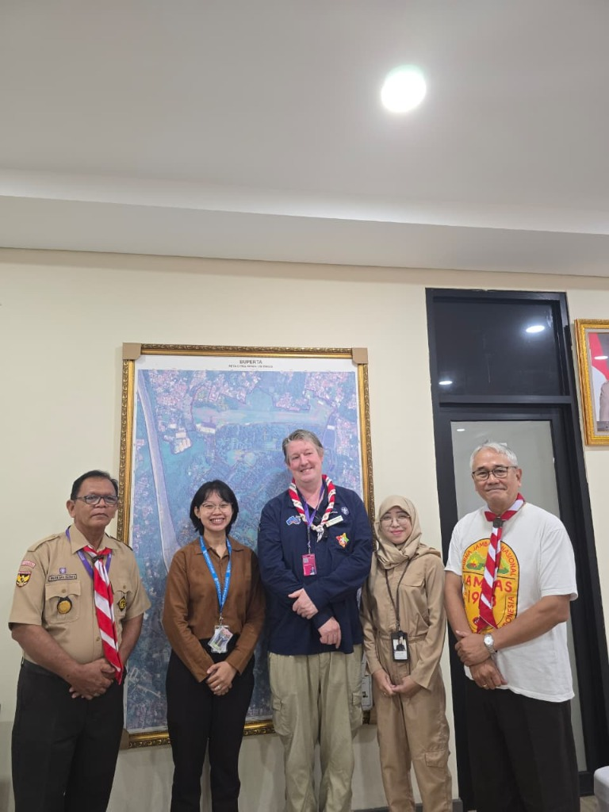
Aligning Youth Mental Health Research at the National Scout Jamboree
An inspiring visit to the National Scout Jamboree in Cibubur—a prestigious national gathering held only once every five years. It was a lucky opportunity to align our youth mental health research with the Indonesian context and meet Kak Parulian Siagian, Kak Brata Tryana Hardjosubroto, and Lord David Baden-Powell.
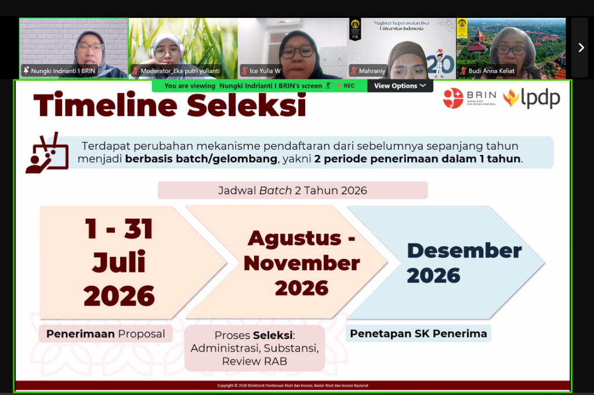
Moderating the MHPsyCN UI Grant Proposal Strategy & Research Trends Workshop
Honored to serve as moderator for the 'Workshop Strategi Penyusunan Proposal Hibah dan Update Tren Riset Kesehatan Jiwa' hosted by the MHPsyCN cluster, FIK UI. We discussed external BRIN research funding schemes with Analis Kebijakan Nungki Indrianti, M.A., and Dr. dr. Sri Idaiani, Sp.K.J. from BRIN.
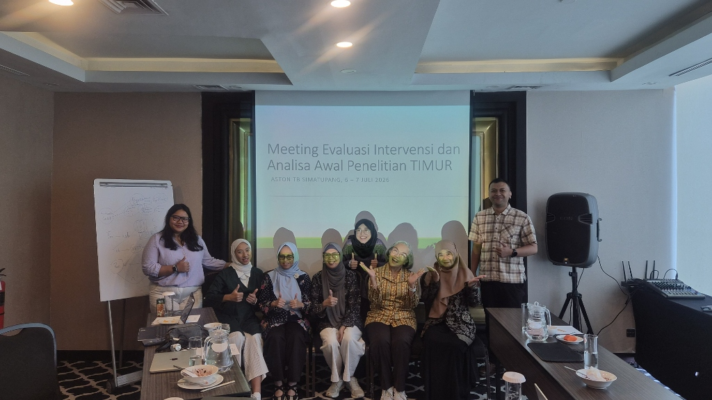
Evaluating TIMUR: Low-Intensity Psychological Intervention in Ternate
Grateful to join Prof. Herni Susanti, Prof. Budi Anna Keliat, Pak Giur Hargiana, and Bu Ria Utami Panjaitan in our evaluation meeting at Hotel Aston Simatupang, Jakarta. We analyzed the early research data of the TIMUR project, implementing low-intensity psychiatric interventions in Ternate, East Indonesia.
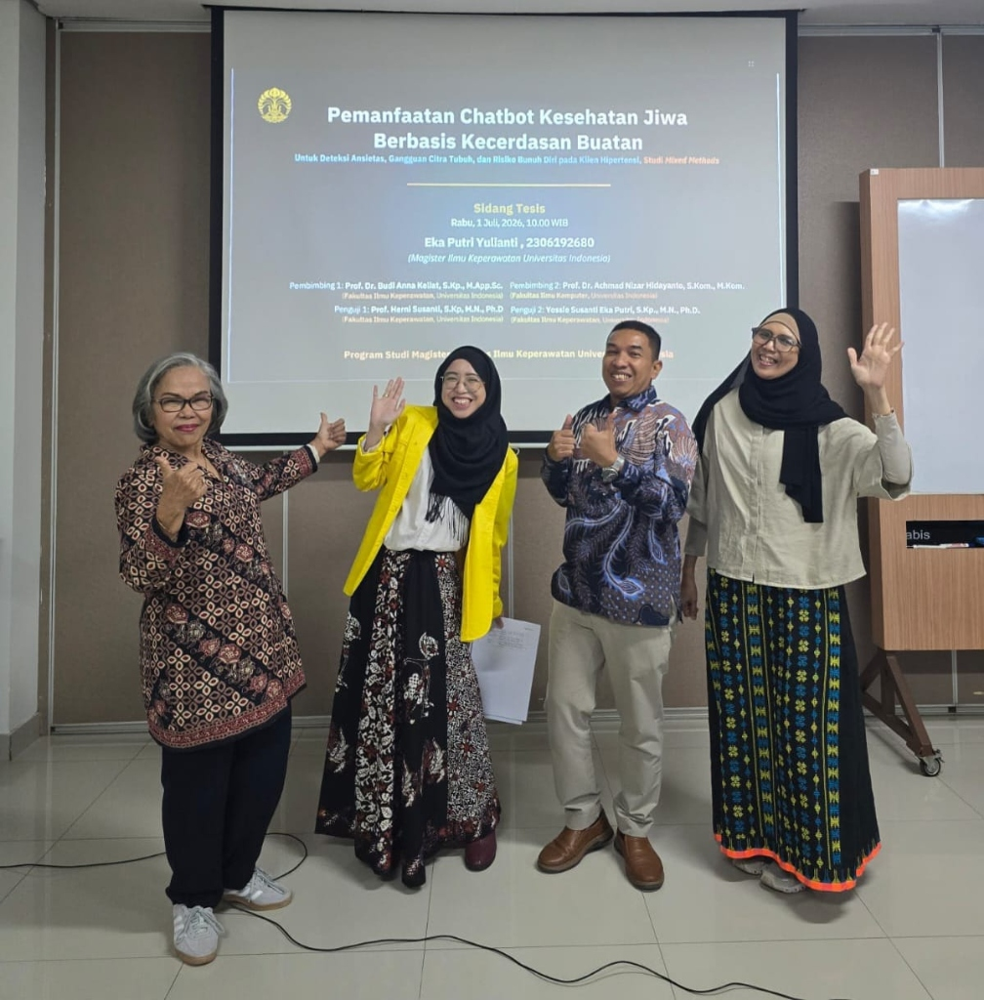
Defending My Master's Thesis: AI-Based Psychiatric Chatbot (ANSWA)
I successfully defended my Master's Thesis at Universitas Indonesia. My research focuses on the development and utilization of an AI-based mental health chatbot (ANSWA) designed to screen anxiety, body image issues, and suicide risk in clients with hypertension.
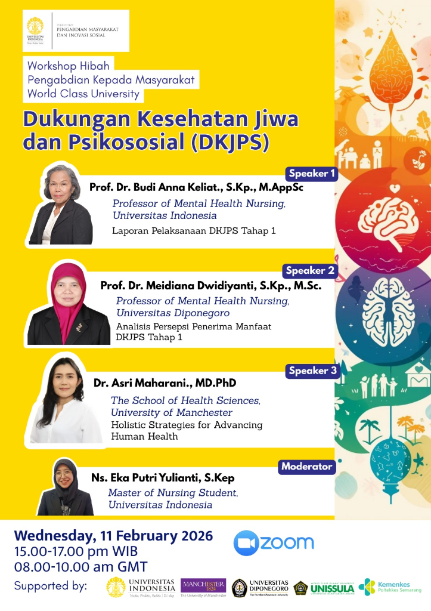
Supporting Mental Health & Well-Being: DKJPS Workshop
Honored to serve as moderator for the Community Engagement Grant Workshop (DKJPS) under the World Class University Program. We facilitated vital discussions on community mental health strategies with Prof. Budi Anna Keliat, Prof. Meidiana Dwidiyanti, and Dr. Asri Maharani.
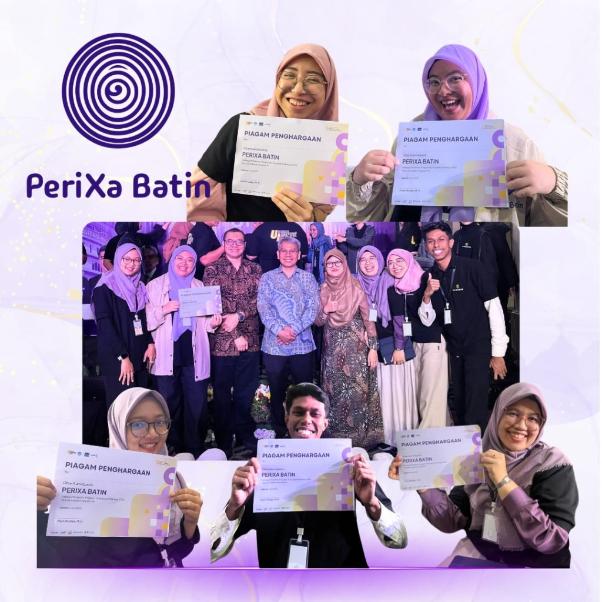
PeriXa Batin: VR-Based Therapy for Youth Mental Health
Our team at FIK UI designed PeriXa Batin, a safe, 5-minute virtual reality therapy application. It utilizes personality validations (Myers-Briggs, Enneagram, Jungian Archetypes) to tailor sessions that trigger positive cognitive responses for anxiety reduction.
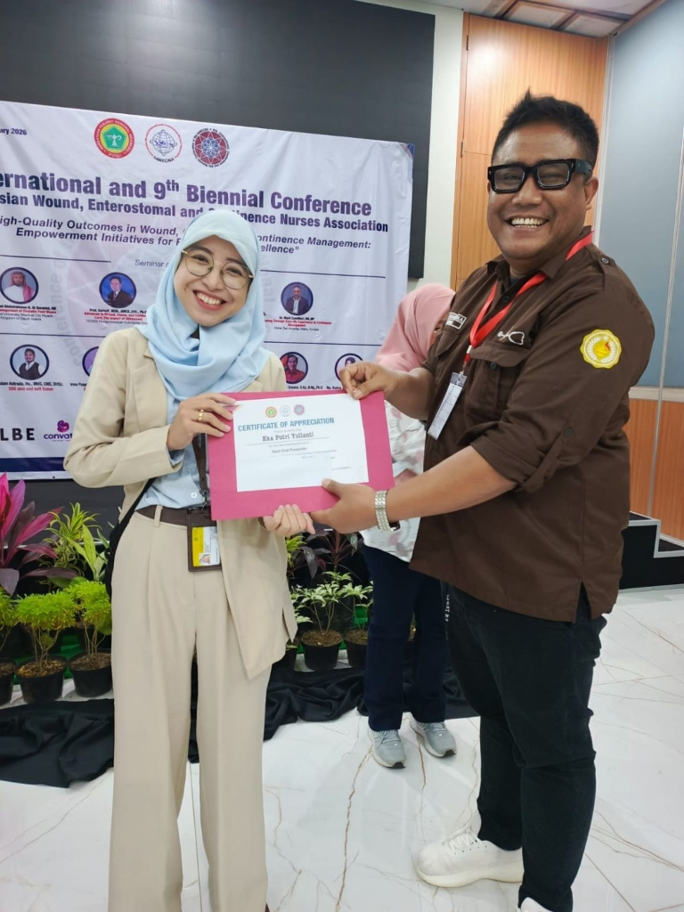
Mindfulness in Wound Care: Best Oral Presenter at InWECNA
Thrilled to have presented my case study on Mindfulness Therapy in Chronic Diabetic Ulcers at the 5th International and 9th Biennial InWECNA Conference, and incredibly grateful to be recognized as the Best Oral Presenter. I truly believe that integrating mental health practices into wound care is key to evolving our clinical services.
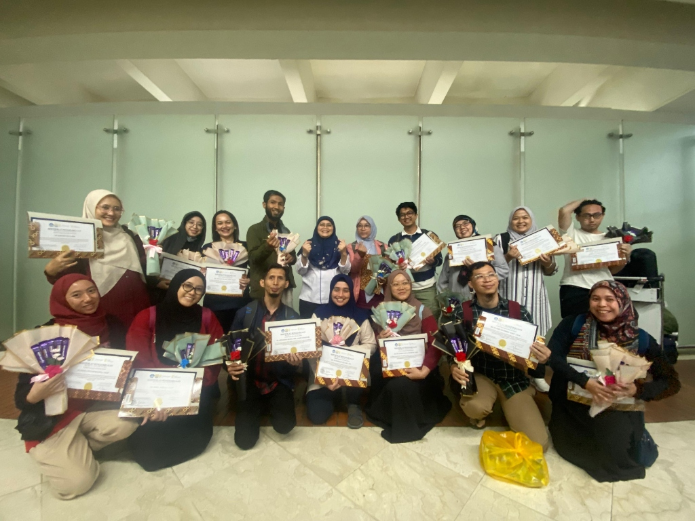
Disaster Relief: Flood & Landslide Response in Sorkam
Just returned from Tapanuli Tengah, North Sumatra, for disaster response community service. Our collaborative team set up 5 health posts, serving 228 residents with post-flood clinical care and psychosocial support.
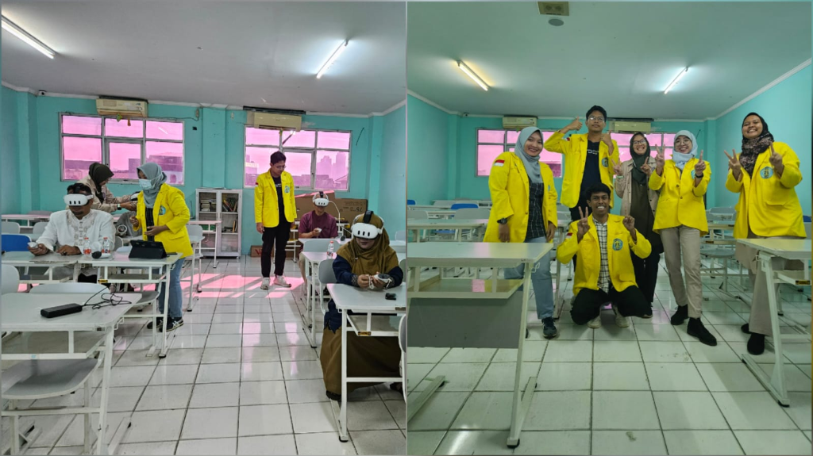
VR-AI for School Teachers: Combating Student Bullying
Our research team implemented a VR-AI program for school teachers to train them in emotional regulation and assertiveness skills, reducing student aggressiveness and classroom bullying.
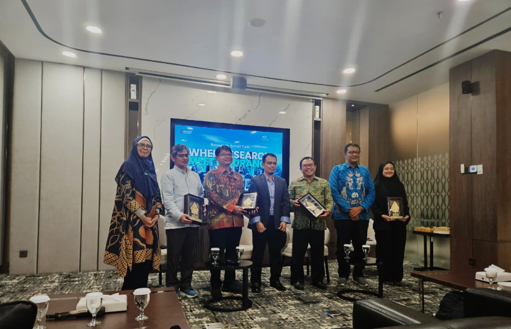
Cross-Sector Collaboration: Research Small Talk with Indonesia Re
Honored to join Prof. Herni Susanti representing FIK UI at Indonesia Re's Research Small Talk. We discussed bridging academic nursing research with corporate industries to solve public welfare risk management.
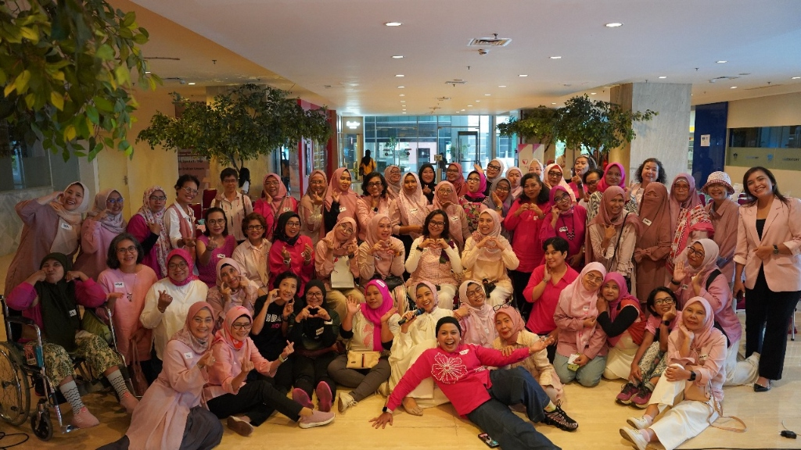
Thrive Again: Wound Management with Cancer Survivors
Honored to speak on managing cancer-related wounds at the 'Thrive Again and Stronger Together' event. We discussed the profound physical and emotional burden of cancer wounds on both patients and caregivers, and how integrated support improves their overall psychological state.
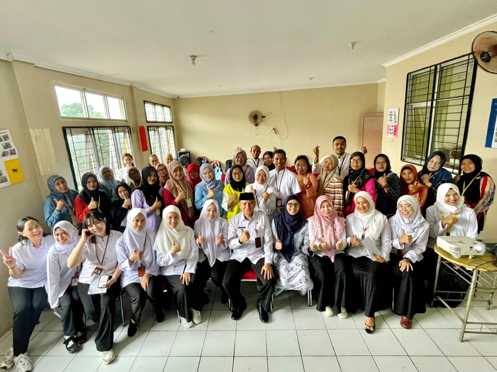
Empowering Communities: Training Mental Health Cadres in Bogor
Grateful to have served as Project Chairperson for our mental health cadre training in Batutulis, Bogor. We trained 23 local cadres in SRQ-20 detection and established vital neighborhood Self-Help Groups (SHGs).
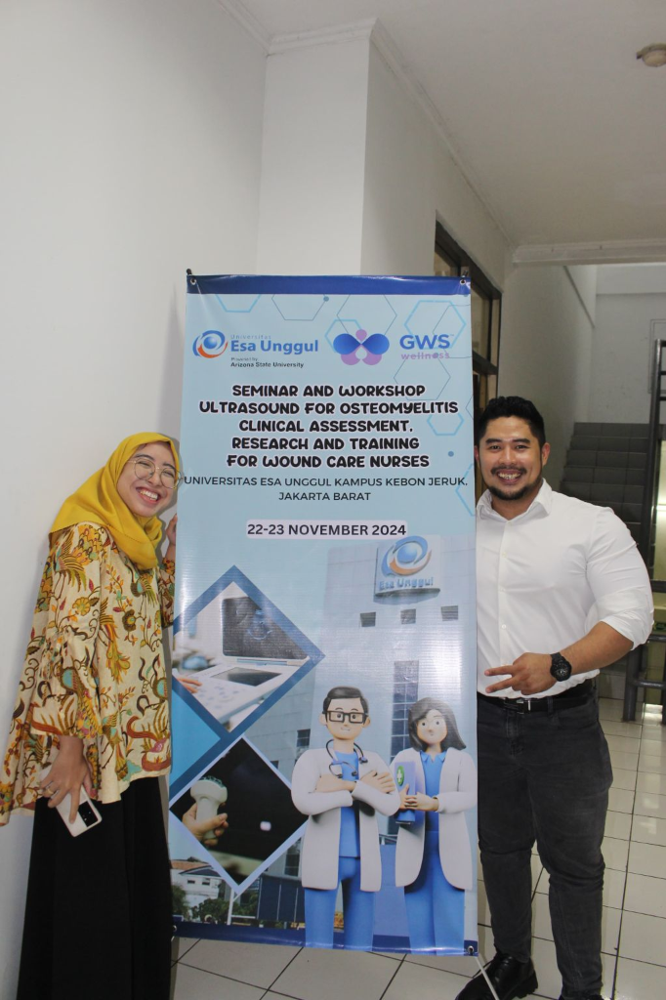
Ultrasound for Osteomyelitis: Clinical Training at Esa Unggul
Glad to have participated as one of the speakers in the 'Ultrasound for Osteomyelitis Clinical Assessment, Research and Training for Wound Care Nurses' seminar and workshop hosted by Universitas Esa Unggul and supported by GWS Wellness. I collaborated with my research partner, Adam Astrada, to share our expertise on this critical topic.
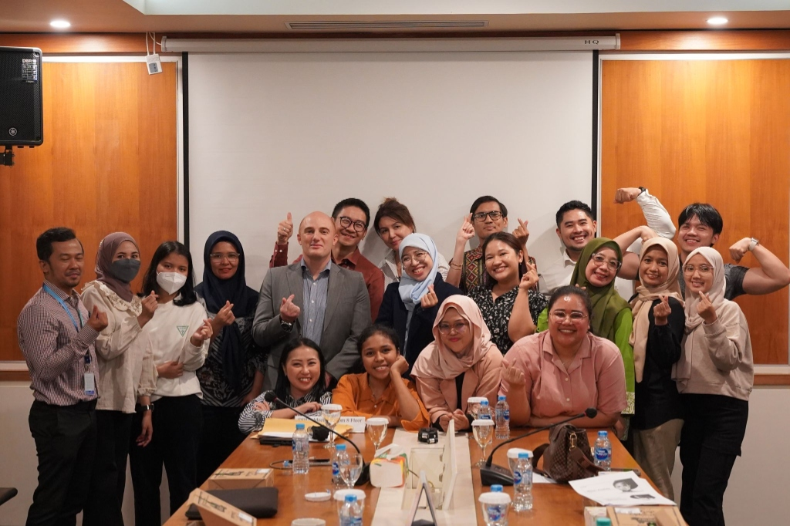
Speaking at the GWS Medika Woundcare Workshop
I recently had the privilege of participating as a speaker at the Woundcare Workshop organized by GWS Medika. The event was a remarkable gathering of healthcare professionals, researchers, and practitioners — including Rafael Mazuz, whose insights were truly wonderful, and my research partner Adam Astrada. A huge thank you to everyone who attended and engaged in meaningful discussions.
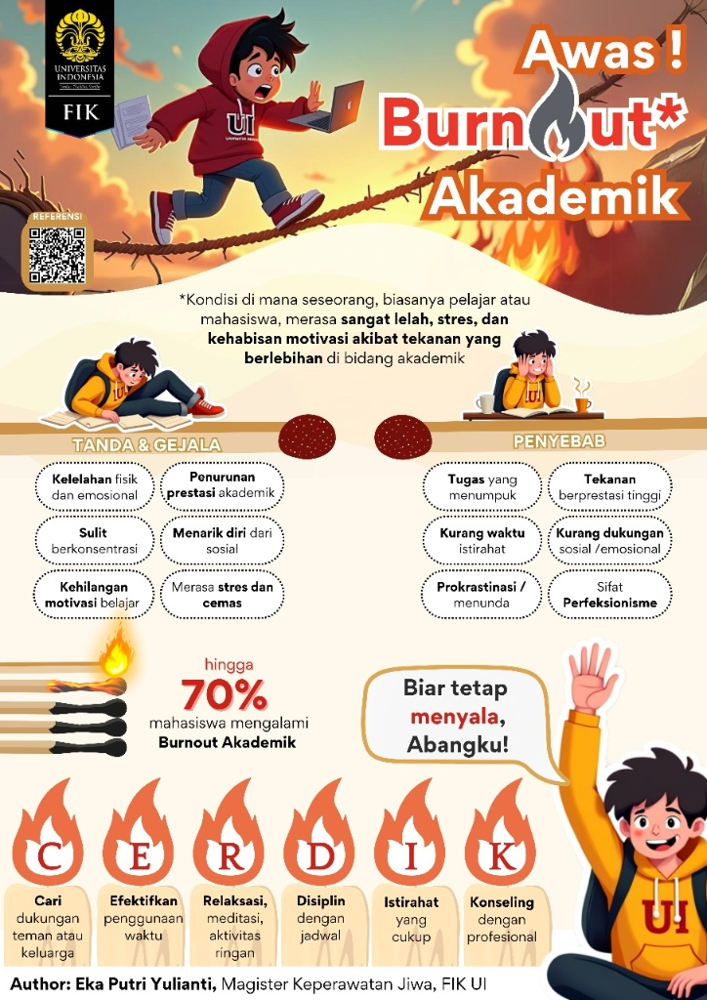
1st Place Poster: PSAF Postgraduate Program FIK UI
Honored to win 1st Place in the Poster Competition during the PSAF Postgraduate Program organized by HMP Faculty of Nursing, Universitas Indonesia. Features the slogan "Empowering Your Journey: Unlocking Opportunities At UI To Be Integrity And Culturally Sensitive Nurse".